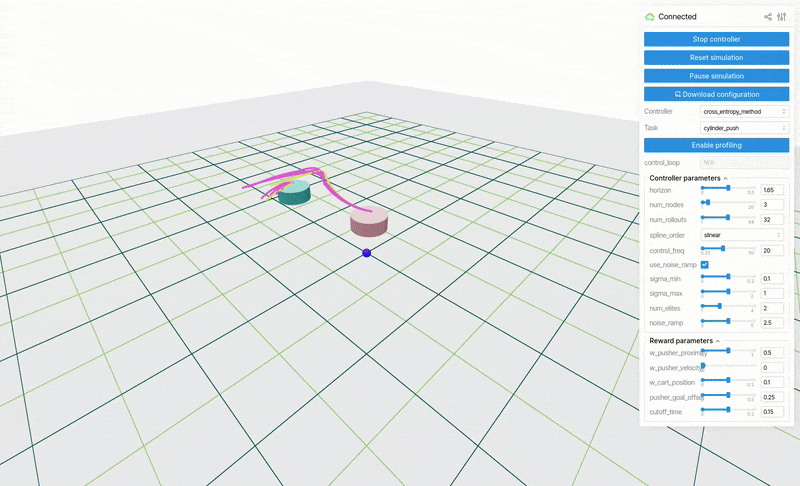

judo#


Judo: A Unified Framework for Agile Robot Control, Learning, and Data Generation via Sampling-Based MPC#
{kind=link}

While sampling-based MPC has enjoyed success for both real-time control and as an underlying planner for model-based RL, recent years have seen promising results for applying these controllers directly in-the-loop as planners for difficult tasks such as quadrupedal and bipedal locomotion as well as dexterous manipulation.
judo is a simple, pip-installable framework for designing and deploying new tasks and algorithms
for sampling-based controllers. It consists of three components:
A visualizer based on ``viser` <https://github.com/nerfstudio-project/viser>`_ which enables 3D visualization of system states and GUI callbacks for real-time, interactive parameter tuning.
A multi-threaded C++ rollout of
mujocophysics which can be used as the underlying engine for sampling-based controllers.numpy-based implementations of standard sampling-based MPC algorithms from literature and canonical tasks (cartpole, acrobot) asmujocotasks.
We also release a simple app that deploys simulated tasks and controllers for better study of how the algorithms perform in closed-loop.
These utilities are being released with the hope that they will be of use to the broader community, and will facilitate more research into and benchmarking of sampling-based MPC methods in coming years.
Installation#
Install judo
pip install -e .
The package contains custom C++ extensions for multi-threaded physics rollouts. These
should be compiled as part of the “typical” python installation, but you may need to
install cmake if it is not available on your system:
sudo apt install cmake
Getting started#
viser-app
Open the visualizer in your browser by clicking on the link in the terminal.
http://localhost:8008/
Run tests locally#
In the virtual environment
pip install -e .[dev]
python -m pytest
you might have to
unset PYTHONPATH